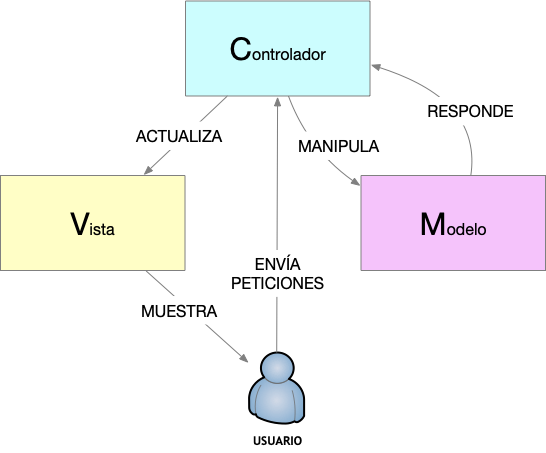

Segundo Bimestre AppWeb
1.1 Patrón de Arquitectura MVC

- MVC significa Modelo - Vista - Controlador
- Es un patrón de arquitectura de las aplicaciones software.
- Es un modelo maduro que puede ser aplicado a diferentes lenguajes de programación y plataformas de desarrollo de software.
- Separa los datos de la aplicación de la interfaz de usuario y de la lógica de control, organizando la aplicación en tres componentes:
- Modelo.- Contiene una representación de los los datos de la aplicación, la lógica de negocio y tiene que ver con la persistencia.
- Vista.- Representa la Interfaz de usuario que presenta los datos al usuario y maneja los mecanismos de interacción.
- Controlador.- Su rol es de intermediario entre el Modelo y la Vista. Está encargado de realizar las transformaciones necesarias para comunicar el modelo con la vista y viceversa; por tanto se encarga de la lógica de control.
- Beneficios de MVC:
- Facilita la evolución por separado de la i) lógica negocio ii) lógica de control e iii) interfaz
- Incrementa reutilización y flexibilidad.
Actividad: Responsabilidades
Cada uno de los componentes de la arquitectura MVC tienen sus responsabilidades. Revisemos un extracto de la página web de la Universidad de Alicante:
-
El modelo es el responsable de:
- Acceder a la capa de almacenamiento de datos. Lo ideal es que el modelo sea independiente del sistema de almacenamiento.
- Define las reglas de negocio (la funcionalidad del sistema). Un ejemplo de regla puede ser: "Si la mercancía pedida no está en el almacén, consultar el tiempo de entrega estándar del proveedor".
- Lleva un registro de las vistas y controladores del sistema.
- Si estamos ante un modelo activo, notificará a las vistas los cambios que en los datos pueda producir un agente externo (por ejemplo, un fichero por lotes que actualiza los datos, un temporizador que desencadena una inserción, etc.).
El controlador es responsable de:
- Recibe los eventos de entrada (un clic, un cambio en un campo de texto, etc.).
- Contiene reglas de gestión de eventos, del tipo "SI Evento Z, entonces Acción W". Estas acciones pueden suponer peticiones al modelo o a las vistas. Una de estas peticiones a las vistas puede ser una llamada al método "Actualizar()". Una petición al modelo puede ser "Obtener_tiempo_de_entrega ( nueva_orden_de_venta )".
Las vistas son responsables de:
- Recibir datos del modelo y los muestra al usuario.
- Tienen un registro de su controlador asociado (normalmente porque además lo instancia).
- Pueden dar el servicio de "Actualización()", para que sea invocado por el controlador o por el modelo (cuando es un modelo activo que informa de los cambios en los datos producidos por otros agentes).
Obra publicada con Licencia Creative Commons Reconocimiento No comercial 3.0